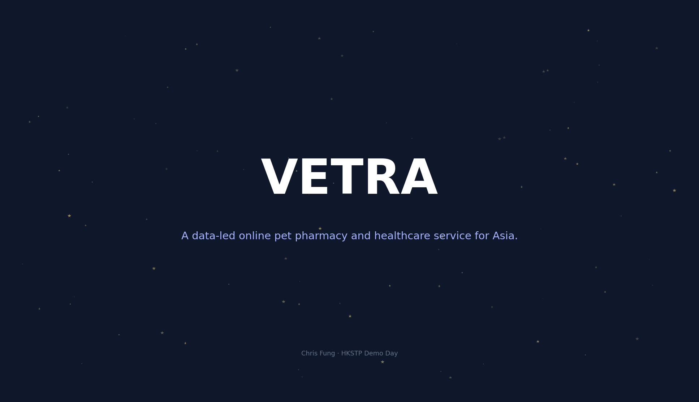
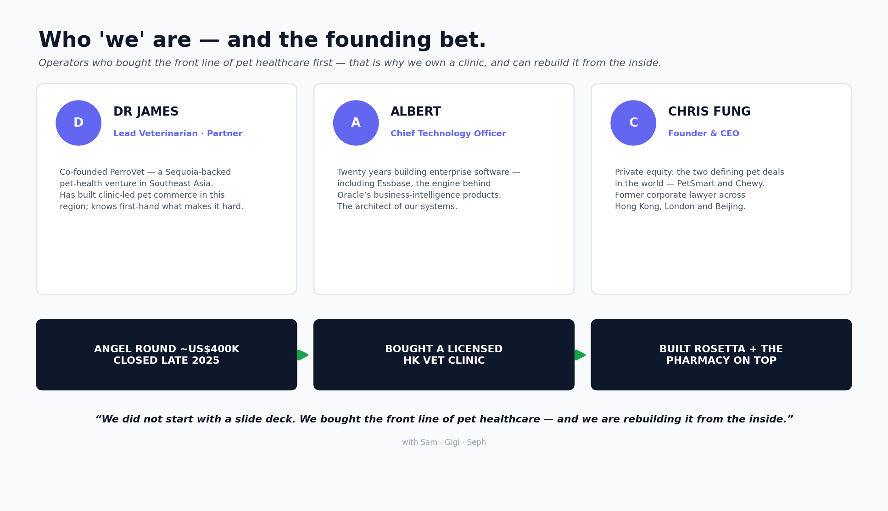
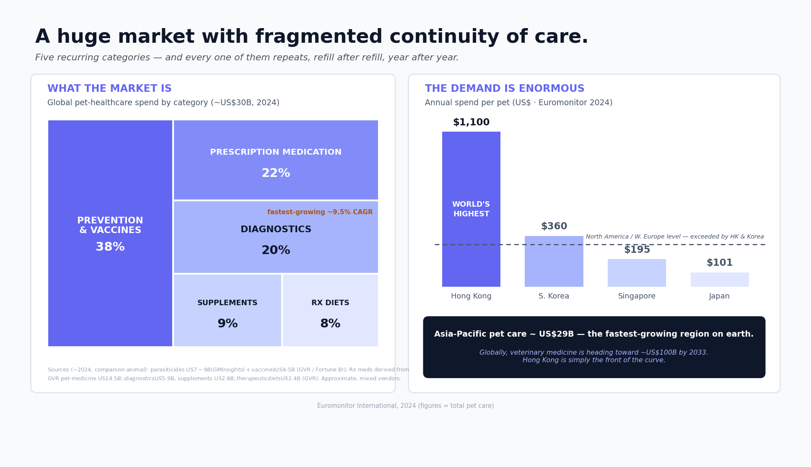
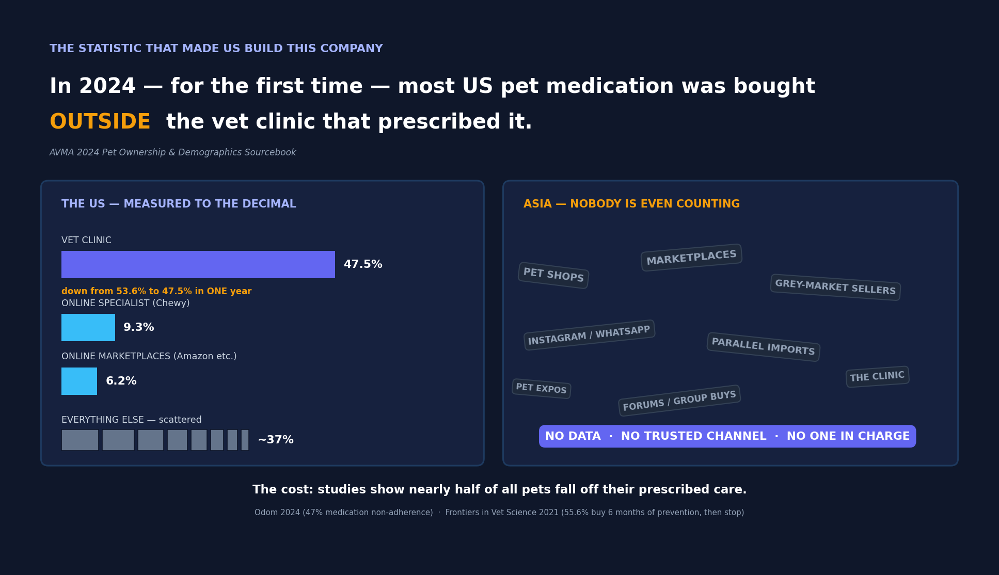
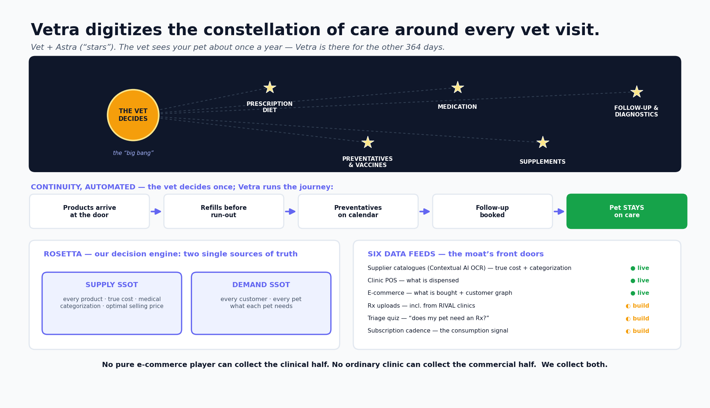
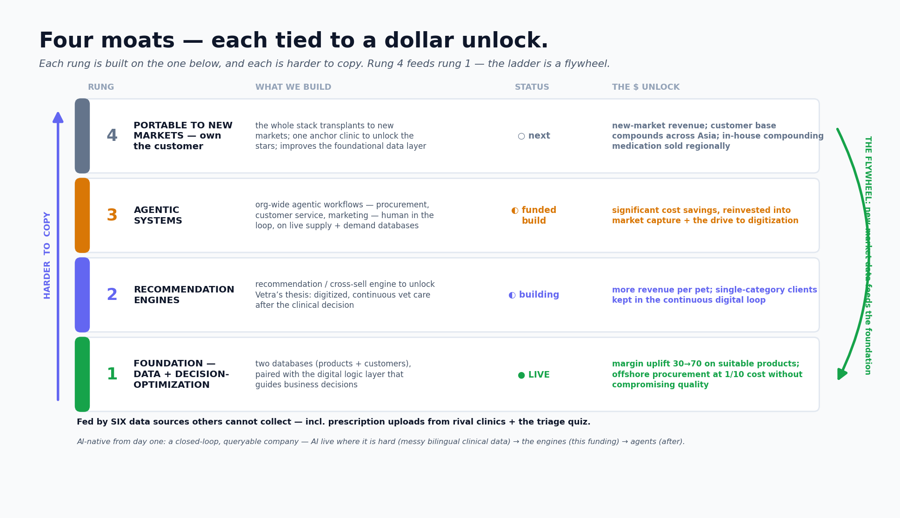
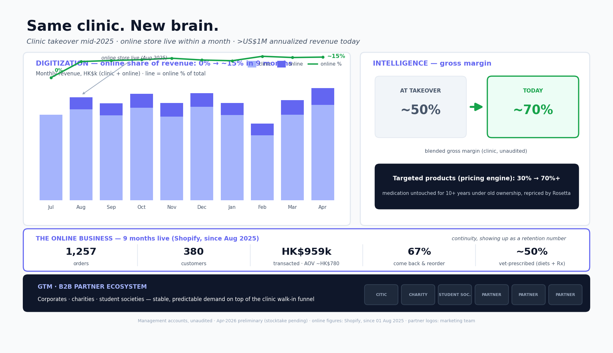
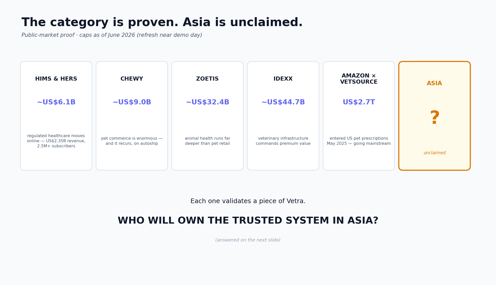
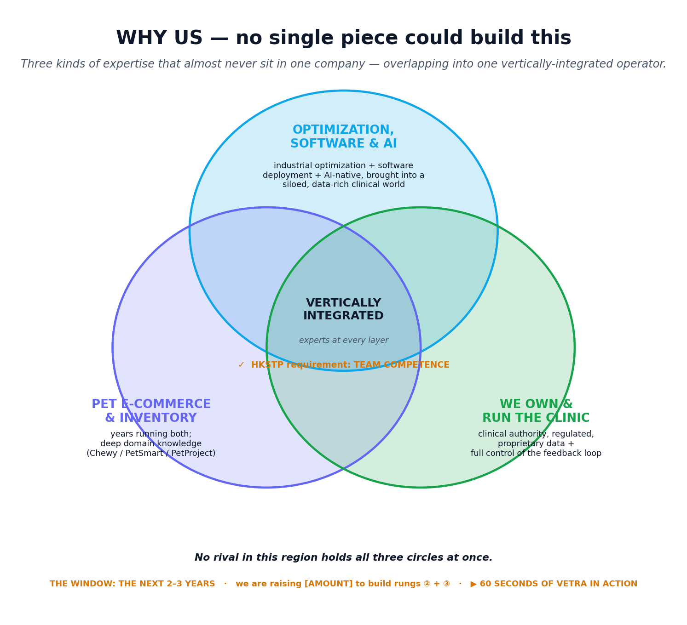
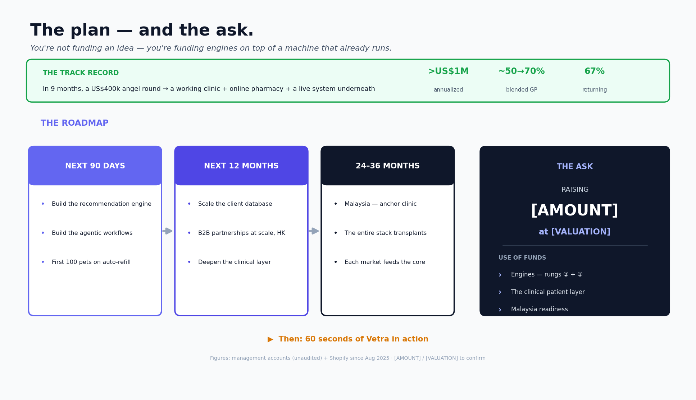

A data-led online pet pharmacy and healthcare service for Asia
HKSTP Pitch · working deck (v8) · edit the script here, build visuals per the notes
The line. Then straight into 1(a).
Good morning. My name is Chris Fung, and I'm excited to present to you Vetra: a data-led online pet pharmacy and healthcare service for Asia.

HKSTP gratitude → team credibility → we bought the front line. Establishes why we own a clinic.
Before the pitch, I want to thank Science Park. Vetra was born inside this building — first through the ideation programme, then the incubation programme, and today, this demo day. Since then, we have passed one million US dollars in annualized revenue, and in Q4 of 2025 closed an angel round of US$400,000 — none of it would have been possible without HKSTP.
Now let me tell you who 'we' are. My partner, Dr James, is our lead veterinarian. He co-founded PerroVet, a Sequoia-backed pet-health venture in Southeast Asia — he has built clinic-led pet commerce in this region before, and he knows first-hand what makes it hard. Our CTO, Albert, has built enterprise software for twenty years — including Essbase, the engine behind Oracle's business-intelligence products; he is the architect of our systems. And before Vetra, I worked in private equity on the two defining pet deals in the world — PetSmart and Chewy — and before that, I was a corporate lawyer across Hong Kong, London and Beijing.
With that funding, we bought a working veterinary clinic here in Hong Kong. That clinic is our laboratory: it is where our system runs, where our data comes from, and where everything I am about to show you is already live. We did not start with a slide deck. We bought the front line of pet healthcare — and we are rebuilding it from the inside.

Lack of Continuity of Care; Pets Miss Out. Split across TWO fast clicks: 2(a) market, 2(b) detonation.
Let us start with the problem. Pet healthcare is a handful of recurring categories. The largest is prevention — flea, tick, heartworm, vaccines — at nearly 40% of the market. Then prescription medication, at about 20%. Then diagnostics, with prescription diets and supplements making up the rest — roughly 40% between them. And every one of them repeats — refill after refill, year after year.
The demand is enormous. Hong Kong owners already spend US$1,100 a year per pet — the highest in the world, more than America, more than Europe. And Hong Kong is simply the front of the curve: across Asia, pet care is already a US$29 billion market — the fastest-growing region on earth — and globally, veterinary medicine is heading toward roughly US$100 billion by 2033.
But here is the statistic that made us build this company: in the US, for the first time ever in 2024 — most pet medication was bought outside the vet clinic that prescribed it. Clinics are losing market share to online providers like Chewy and Amazon. Now look at Asia: nothing like that exists.
Now look at Asia. A handful of clinics have bolted webshops onto their counters — you can upload a prescription here, order a diet there. But nobody has built the system. The continuity is still manual everywhere: no unified pet record, no automatic refill, no engine underneath. So the spend still scatters — pet shops, grey markets, parallel imports — and pets still fall off their care.
A market this large, growing this fast, with no continuity of care. That is the problem.


Vetra Captures Continuity of Care Through Digitization.
Vetra is our solution to this problem. Our name comes from the word 'Vet', as well as the word 'Astra', which is 'stars' in Latin. If pet healthcare is the universe we operate in, the big bang for all these services originates from one instance: the clinical diagnosis. Our vision is to digitize the constellation of care that orbits every single vet visit. Today, the moment you leave the clinic, that constellation goes dark. Vetra is the company that lights it up. The veterinarian sees your pet about once a year. Vetra is there for the other three hundred and sixty-four days.
Here is what that means in practice. The vet makes the decision once — and from that moment, Vetra runs the journey. The prescribed diet and medication arrive at the door. The refill is prepared before the pet runs out. The preventatives stay on their calendar. And when the follow-up is due, the visit is booked. The owner no longer has to remember anything, source anything, or stitch anything together — and so the pet stays on its care. That is what continuity through digitization means.
And for the owner, this is worth real time and real money. A chronic-care pet means a dozen or more clinic trips a year just for refills — twenty-plus hours — gone. [Optional, only if we have a real comparison: and on shoppable items, our prices run roughly X% below typical clinic retail.] The pet never runs out. And everything comes from a licensed veterinary practice — not a grey-market seller.
Now — none of that is possible unless the system truly knows: which exact product, at what true cost, at what dose, whether it is in stock, for which pet, with which condition. That knowledge is Rosetta, our in-house decision engine, purpose-built for a fragmented, heavily regulated pet-medicines market. The foundation for Rosetta is two proprietary databases: (a) one for supply — every product, its true cost, its medical categorization, its optimal selling price; (b) one for demand — every customer, every pet, and what each pet needs. Six data feeds keep that knowledge alive — three live today, three in build — including prescription uploads from rival clinics and our triage quiz. No pure e-commerce player can collect the clinical half; no ordinary clinic can collect the commercial half. We collect both.
And this data is not just an asset — it is a head start that widens by itself. Every prescription, every refill, every visit teaches our system something no competitor can see or buy. The longer we operate, the bigger the gap. Let me show you what we are building on top of it.
Data ingestion points feeding rung ① (the moat's front doors)
(table — build as a visual; source preserved in the dossier)
Each point is data a pure e-commerce player or a pure clinic cannot collect. Together they are the moat — and uploads from rival clinics turn a competitor's prescription into our acquisition + intelligence signal.

Four moats, each tied to a $ unlock; rung 4 feeds rung 1 — the ladder is a flywheel.
So how does Rosetta work? At the core is a vision of building a closed-loop, queryable company, where every product, every prescription, every refill becomes data the system can read, act, and improve on. Doing so allows us to be AI-native from day one. There are 4 incremental moats we are building with this data-driven strategy.
Rung 1, at the foundation: applying this data against proprietary, digitized business logic, to achieve business efficiency. This is live today. As an example, using our supply database, we have been able to recalibrate pricing of medication at the clinic that had not been touched for more than ten years under old ownership — lifting margins from as low as 30% to over 70%. The system we built also allowed us to run an offshore procurement team at one-tenth of Hong Kong prices.
Rung two, the recommendation engine: by pairing our product database with our client database, we achieve Vetra's goal — continuous healthcare. If a client is already on preventatives, we can offer them prescription diets, ongoing medication and follow-ups, automatically.
Rung three, agentic systems — to take the cost out of operations and marketing. Because the company is closed-loop, the software can act on its own. On the operations side, it predicts when each pet will run out and prepares the reorder, and the concierge answers customers from live data. And on the marketing side — because we hold both the supply data and the demand data — the system knows exactly which pet needs which product next, so the campaigns write and target themselves: the refill reminder, the cross-sell offer, sent to the right owner at the right moment. A human only approves. Workflows that used to need a back office — and a marketing team — now run themselves, and every transaction makes the next prediction more accurate.
Rung four: portability — to unlock new markets. Every market in Asia is fragmented and regulated differently — which is exactly what this system was built for. We land one anchor clinic, tune the rules to local regulation, and the entire stack transplants. And as the customer base compounds across markets, the brands must come to us to reach them.
And finally, the part I like most: rung four feeds rung one. Every new market pours new data into the foundation, and the foundation sharpens every engine above it. So this is not really a ladder — it is a flywheel. The foundation is live. The engines are what this funding builds. And every turn makes it harder for anyone behind us to catch up.
★ THE KEY TABLE — the moat ladder (user-edited, verbatim)
(table — build as a visual; source preserved in the dossier)
*Fed by 6 data sources others can't get — incl. prescription uploads from RIVAL clinics and the website triage quiz. A pure e-com or a pure clinic can't collect this.

Real numbers from the live operation: digitization share rising + margins transformed.
Let me show you the proof. In mid-2025 we completed the clinic takeover, and within a month, our online store was live on top of it. Today, the two businesses run at more than one million US dollars in annualized revenue. Two numbers tell the story. First, digitization: online sales have grown from zero at takeover to roughly fifteen per cent of total revenue in nine months — and they are still climbing. Second, intelligence: blended gross margins have risen from about fifty per cent at takeover to roughly seventy per cent today — and on the specific products our pricing engine targeted, from as low as thirty to over seventy. Same clinic, same products, same customers. The only thing that changed is the system underneath.
Some detail on the online business, because the pattern matters. Since launch nine months ago, we have processed more than one thousand two hundred and fifty orders from around three hundred and eighty customers, at an average order of about seven hundred and eighty Hong Kong dollars. Sixty-seven per cent of those customers come back and order again — continuity of care, showing up as a retention number. And roughly half of online revenue is vet-prescribed — veterinary diets and prescription medication, including chronic drugs like Keppra — with the rest in wellness and food.
And our growth is anchored: our marketing team has built a community of B2B partners — from CITIC to charities and student societies — giving us stable, predictable demand. [Seph to add logos to deck]

The category is real, recurring, and valuable — and it is moving online now. Ends on the question the Venn answers.
The public stock market already proves how valuable this category is. Hims demonstrated that regulated healthcare can move online successfully, when the clinical workflow is built correctly — it now earns over two billion US dollars a year. Chewy demonstrated that pet commerce is enormous, and that it repeats reliably through automatic orders. Zoetis demonstrated that animal health is a far deeper market than ordinary pet retail — it is worth over thirty billion dollars. IDEXX demonstrated that veterinary infrastructure can command a premium valuation. And in 2025, Amazon itself entered the pet prescription market, through a partner called Vetsource. Each of these companies validates one piece of Vetra. The question that none of them has answered is this: who will own the trusted system in Asia?
(table — build as a visual; source preserved in the dossier)

The answer to 'who will own Asia?': the only company holding all three circles. Cues the film.
So who will own it? We believe pet healthcare in Asia will be won by whoever holds three things at once: real optimization, software and AI expertise; real e-commerce and inventory operations; and a licensed clinic — with the data feedback loop that only comes from owning one. No competitor in this region holds all three. We do. And because this is a data business that compounds, whoever owns the customer first wins — and that race will be decided in the next two to three years, which is exactly the window this incubation period funds. Let me close with sixty seconds of Vetra in action.

So here is the plan, and the ask. First, the track record: in nine months, we turned a four-hundred-thousand-dollar angel round into a business running at more than one million US dollars annualized — a working clinic, a growing online pharmacy, and a live system underneath them. The next ninety days: we build the recommendation engine and the agentic workflows, and put our first hundred pets on vet-approved automatic refills. The next twelve months: we scale the client database and the B2B partnerships across Hong Kong. And from there, Malaysia — one anchor clinic, and the entire stack transplants. To do this, we are raising [AMOUNT] at [VALUATION]. You are not funding an idea — you are funding engines on top of a machine that already runs.

Behind-the-scenes exposé — plays after the Venn.
[script]